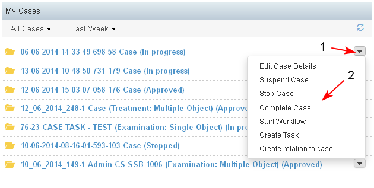
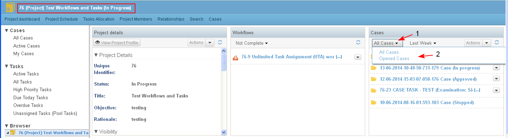
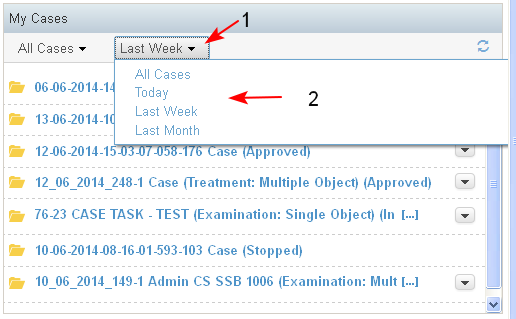
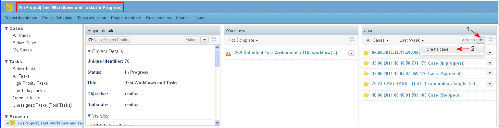
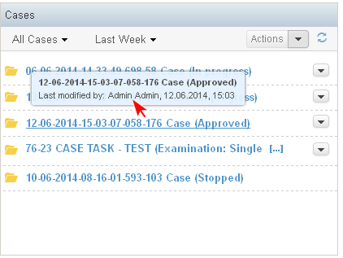

The use case describes the requirements to the content to be displayed on the Cases dashlet, requirements on filtering cases and actions on cases.
The Cases dashlet is context dependent and the content displayed on it depends on whether the dashlet is on the Personal or Project dashboard:
- On the Personal dashboard the My Cases dashlet lets the user view and manage the cases that are assigned to him/ her. The user has an individual role of "Collaborator" or "Contributor" in these cases. This means that there is a task assigned to current user, or specific permissions are given or the user has created the case.
- On the Project dashboard the Cases dashlet displays the cases, which are part of a project.
- The cases are sorted in the dashlet by date of creation/ modification and the latest one are on the top.
- For each case in the dashlet is displayed:Case ID, Case Title, Case Type (optional), Status. They are a link to open the case dashboard of the corresponding case.
- Next to each case in the cases dashlet there is a list with available actions on the case (restricted by user role in the project and case dashboards), which in general include: Edit Case Details, Start Case, Create Task, Start Workflow (1-2).

- The cases could be filtered with the combination of 2 filters.
- The filter by user role (1-2) in the Personal Dashboard/ My Cases Dashlet has four options: All Cases, Created by Me, Owned by Me (all cases for which the user is a Collaborator), I work on (all cases for which the user is a Consumer but has participated in a workflow process on that case). The default value is "All Cases".

- The filter by status in the Project Dashboard/ Cases Dashlet has two options: All Cases and Opened Cases (1-2). The default value is "All Cases".

- The Filter by Time in the Personal Dashboard/ My Cases Dashlet and in the Project Dashboard/ Cases Dashlet has options:
- "All cases" - all cases are listed
- "From Today" - displays all cases which are created or updated today
- "From Last week" - displays all cases which are created or updated in the last seven days back from today. The result is ordered in sections by date and day from the week (21.01.2013, Moday; 22.01.2013, Tuesday ... etc.)
- "From Last Month" - displays all cases which are created or updated in the last 30 days back from today. The result is ordered in weeks: Last Week, 2 weeks ago, 3 weeks ago, 4 weeks ago.
- "All cases" - all cases are listed
By default in the case dashlet the filter by time is set to "Last week".

- A new case could be created from the Project Dashboard/ Cases dashlet/ Actions/ Create Case (1-2).
The action is available for users with corresponding permissions.

- There is a tool tip for each case in the dashlet . The tool tip is visualized when the user passes the cursor over with a selected case.
In the tool tip there is more information about the user who last modified the case and the time of last modification.
